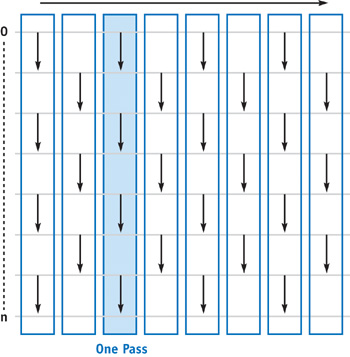
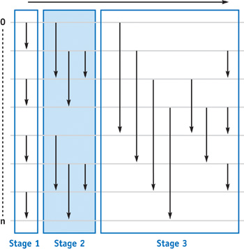
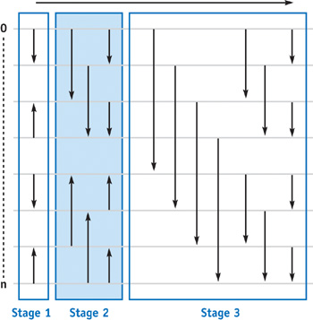

GPU Sorting: Part One
Motivation - Direct Illumination Sampling
After a busy and tiring semester of applying for graduation programs and working part-time out of campus at the same time, I have finally found some time to restart the blogs. Currently I am working on my graduation project, which is about implementing and improving real-time ray tracing techniques, and I decided to start from direct illumination sampling algorithms, which I may talk about in a later blog. In short, I need to organize the lights in a scene, which are basically emissive triangular meshes, into probability trees that enable utilizing knowledge of the shading point to improve the quality of the generated light samples. To build the trees (or BVHs), I need to sort the triangles based on 30-bit Morton codes computed using their centroids. Theoretically this should not be a problem, but for some reason I have to implement the sorting algorithm on my own. Considering that the light sampler has to be updated every frame, which means that the budget for building my light trees is quite tight, I need to seek for a solution to sort the Morton codes as fast as possible. So, naturally, I started looking for parallel sorting algorithms on GPU.
For conciseness and simplicity, let's describe our problem as sorting
an array of \(n\)
unint32_t keys parallel on the GPU. With this problem
solved, adapting the solution into building probability trees of lights
would be trivial.
First Attempt
Sorting algorithms can be categorized based on whether their behavior is dependent on the input keys to be sorted. Data-driven ones, such as Quicksort, depends largely on the input data. As a matter of fact, Quicksort has a worst time complexity of \(O(n^2)\) when the keys are already in order. Data-independent ones, however, are not affected by the orders of the input keys. The number of steps (or passes) it takes to sort the keys is merely a function of the number of input keys, \(n\). This makes them ideal for my case, where unstable framerate due to undulatory time cost is not favored.
Data-independent sorting algorithms, in some ways, are similar to digital circuits, or networks. It takes constant time for the input signal to propagate through the network. One simple example of such networks is the sorting network of odd-even transition sort. Here is a picture of the network from GPU Gems 2.

The arrows in the picture means an operation of comparison and swap: we compare the two keys at the two ends of the arrow and swap them if the one pointed by the arrow is less than the other. Odd-even transition sort can be described as repeating the operation of comparing and swapping on keys and their neighbors, slowing moving larger keys towards the end of the array and smaller keys towards the beginning. If we have \(n\) keys and the largest is located at index 0 when the data was presented to the network, we need \(n-1\) passes to move it to index \(n-1\), since we can only move it by 1 in each pass.
Odd-even transition sort is simple, straightforward and easy to parallelize. In fact, we can make each thread compare and swap a pair of neighboring keys, which yields \(n-1\) threads in total. We can assembly the threads into warps and blocks, so that the algorithm can be ready to roll on a machine. However, our first attempt has a lethal flaw. It is obvious that the algorithm has a quadric time complexity, and it takes \(n-1\) global synchronizations to complete sorting. Suppose we are given a bunny mesh consisting of 10,000 triangles, this means that we need to dispatch the compute shader 9,999 times to sort them. Without doubt, this would take too much time, making us drift even further from achieving real-time ray tracing.
Fewer Passes
Another data-independent sorting algorithm is the odd-even merge sort. This algorithm sorts the first and second half of the sequence and then merges them. It assumes that the number of input keys \(n\) is a power of 2, and the algorithm can be described using recursion. The algorithm has two key recursive functions: sort and merge.
The sort functions operating on \(n\) keys (\(x_0,\dots,x_{n-1}\)) works as follows:
- if \(n\gt2\) then
- sort the two halves and merge them
- otherwise, sorting should be trivial
The merge functions operating on \(n\) keys works as follows:
- if \(n\gt2\) then
- merge the odd and even parts of the sequence
- compare and swap \((x_i,x_{i+1})\) for all \(i\in\{1,3,5,\cdots,n-3\}\)
- otherwise, merging should be trivial
The sorting network of algorithm looks like follows:

Odd-even merge sort on \(n\) elements takes \(O(\log^2(n))\) passes, which is derived from the fact that we have \(O(\log(n))\) stages and stage \(i\) consists of \(i\) passes. It is much better than the previous \(O(n)\). However, one problem about the sorting network of the odd-even merge sort is that we do not seem to fully utilize the threads in the later passes of each stage. More than half of the threads are inactive from the second pass of each stage until the last. Additionally, odd-even merge sort uses too much branching, which is not ideal on GPU.
Fully Utilizing GPU Resources
The bitonic merge sort builds both an ascending and a descending subsequence of keys and then merges the two subsequences. The sorting network of this algorithm is presented below:

This network has \(\log(n)\) sorting stages, where the \(i\)-th stage has to perform \(i\) passes, which means that the complexity of this algorithm is the same as the odd-even merge sort. However, as we can see, the network is more regular and every thread has something to do. We can launch same number of threads for each pass, unlike in the odd-even merge sort where active threads decrease by half in the earlier passes of each stage.
I was able to find the example code from Wikipedia.
1 | for (auto k = 2; k <= n; k <<= 1) { |
Basically what we want to do is to parallelize each inmost loop by assigning the operations to threads. Then the two outer loops would yield \(\log_2^2(n)\) passes altogether.
Conclusion
In fact, as mentioned in Real-Time Stochastic Lightcuts, a parallel bitonic sort was applied to sort the Morton codes. So now we already have a solution for the problem that motivated my look into parallel sorting algorithms on the GPU.
However, the article from GPU Gems 2 I referred to for this blog was published so early that the implementations were presented in GLSL fragment shaders instead of compute shaders. I do believe that with the underlying machine and API updated over the years, the performance of the parallelized implementations would be better than in 2005, but what concerns me is that:
- both bitonic merge sort and odd-even merge sort can only handle \(n\) keys where \(n\) is a power of two, which means that in most cases we will have to reluctantly ceil our arbitrary \(n\) to the closest power of 2.
- the performance measurements provided in the original article are
quite concerning, where
std::sortseems to beat both of the two parallel implementations when \(n\) is large enough.
Moreover, a naïve implementation of the odd-even merge sort and bitonic merge sort does not seem to be able to utilize resources such as shared memory or intrinsic functionalities provided by the machine, which usually makes a lot of differences when performance is what you are after. Maybe there is a way to sort segments of the input keys within blocks and then merge the sorted segments, making it possible to exploit memory locality and reduce the number of passes it takes to put the keys in order.
These problems make me want to dig even deeper into the realm of parallel sorting on GPU to see if better strategies have been proposed since 2005. So this blog is just the beginning of my series on GPU sorting algorithms.
Anyway, thanks for reading my blog. Have a good day!
Reference
For this blog, I referred to Chapter 46 of GPU Gems 2. The article provided example code in GLSL and measurements of performance. If you are interested in this topic, I highly recommend you go checking the original article for more innovation.